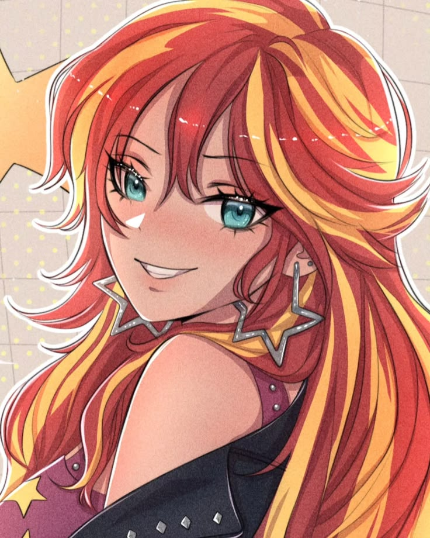

Super Força
O dano de seus socos se torna 1d20, suas armas recebem +1 dado de dano e Sunset recebe +2 em Força.
Sun
I'm a Pocotó

Sunset Shimmer é uma Demi-Humana de Unicórnio cuja natureza combina características humanas com a antiga energia mágica de Equestria. Sua presença é marcada por uma enorme capacidade física, inteligência e uma afinidade excepcional com magia.
Apesar de sua aparência humana, Sunset possui também uma forma unicórnio, representando a ligação direta com sua origem mágica. Sua energia pode se manifestar através de uma aura prismática, envolvendo seu corpo e fortalecendo suas capacidades.
Uma arma incomum para uma combatente igualmente incomum.
Custo: 70 PM
O dano de seus socos se torna 1d20, suas armas recebem +1 dado de dano e Sunset recebe +2 em Força.
Sunset concentra grandes quantidades de energia em seu corpo ou em um ponto específico e as libera de forma rápida e violenta, causando danos massivos ao redor.
Sunset reduz em 30 o dano de impacto, não recebe dano de queda, recebe +3 em Reflexos e se torna imune a eletricidade e efeitos semelhantes.
A linhagem sagrada do unicórnio desperta por completo, fazendo a mana fluir pelo corpo como uma corrente celestial. A aura da usuária assume tons prismáticos enquanto pequenas partículas de luz giram ao seu redor, fortalecendo tanto sua mente quanto seu corpo.
Converte Mana Base em HP na mesma quantidade.
Uma visão extremamente apurada.
+10 PercepçãoConsegue sentir cheiros que normalmente passariam despercebidos, identificando coisas ocultas.
Seu vasto conhecimento permite recordar informações úteis sobre quase qualquer assunto.
+2 Ciências e InvestigaçãoA energia ancestral do unicórnio percorre seu corpo, criando pequenos fragmentos de luz prismática.
+10 Magia / +10 ManaAs orelhas de Sunset são extremamente sensíveis.
Sunset Shimmer // Equestria Archive